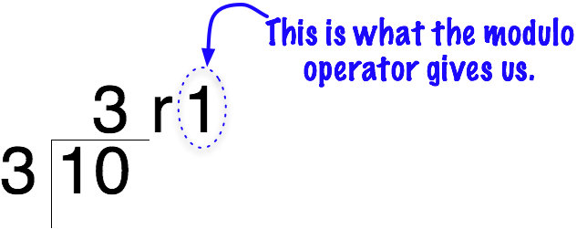

Operators That Multiply and Divide
Multiplication and division are typical mathematical operations used in everyday life...and used every day in programming. Check out the examples below to see how those operations are accomplished in JavaScript code. And be sure to type them out yourself to get practice.
The Multiplicative Operators
- The asterisk
(*)is used for multiplication - The forward slash
(/)is used for division - The percent sign
(%)is the modulo operator. It'll be how we deal with remainders when we divide.
Using the Multiplicative Operators
Multiplying
You can multiply numbers and number variables.
Unlike the case with addition, strings are automatically converted to numbers in multiplication and division. The Number function is not technically needed, but in this class you will be expected to convert strings to numbers anyway.
When you multiply a number and a string the string will be converted to a number by JavaScript, provided that the string can actually be converted to a number.
Even when you multiply a string by a string JavaScript will convert the strings to numbers, if it can.
If JavaScript cannot figure out how to convert the string to a number - it will return an error message "NaN" to let you know that you attempted to multiply by a value that is "Not a Number"!
You might also note in the last code statement below that JavaScript does the calculations inside parentheses FIRST. More about the "order of operations" later...
// Multiplying numbers
var numberOne = 25;
var numberTwo = 100;
var numberStringThree = "20";
var nameString = "I am Brian.";
var multiplyResult = numberOne * numberTwo;
// Multiplying numbers directly
document.write("You can just multiply numbers right here: ");
document.write(75 * 34);
document.write("\n");
// Multiplying number variables
document.write("The result of multiplying " + numberOne + " times "
+ numberTwo + " is: " + multiplyResult + "\n");
// Multiplying numbers and strings?
multiplyResult = numberOne * numberStringThree;
document.write("The result of multiplying " + numberOne + " times \""
+ numberStringThree + "\" is: "
+ multiplyResult + " <-- Huh? \n\n");
document.write("What happens when you multiply two strings?\n");
document.write('"200" * "34" = ');
document.write("200" * "34");
// Multiplying a number and a string that does NOT contain a number
document.write("\n" );
document.write("Multiply with a non-number string: " + (2 * nameString));
Dividing
You can divide numbers and variables. To do this, you use the / symbol.
When you divide a number and a string the string will be converted to a number by JavaScript. Just like multiplication and subtraction, JavaScript will coerce the string into a number. Don't let it do that! Contert strings to numbers yourself!
Even when you divide a string by a string JavaScript will convert the strings to numbers, if it can. If it cannot convert the string to a number, the "NaN" error message displays.
// Dividing numbers
var numberFour = 250;
var numberFive = 7;
var numberStringSix = "25";
var divisionResult = numberFour / numberFive;
// Dividing numbers directly
document.write("You can just divide numbers right here: ");
document.write(75/34);
document.write("\n");
// Dividing number variables
document.write("The result of " + numberFour + " divided by "
+ numberFive + " is: " + divisionResult + "\n");
// Dividing numbers and strings?
divisionResult = numberFour / numberStringSix;
document.write("The result of " + numberFour + " divided by \""
+ numberStringSix + "\" is: "
+ divisionResult + " <-- Hmm...\n\n");
document.write("What happens when you divide two strings? \n");
document.write('"200" / "34" = ');
document.write("200" / "34");
The output looks like this:
When you divide numbers, you sometimes get a decimal number instead of a whole number when things don't divide evenly. Sometimes it's nice to know how many leftovers you have.
Modulo Operator
The modulo operator is very simple. Remember back in elementary school when you learned to do division manually? They called it "long division" in my era. The modulo operator just gives you the remainder when you divide two numbers.
Look at it this way. Divide a number into another number - for example, 12 divided by 5. How many times can the whole number 5 go into 12? Twice. And what's left over??? Two. AHA! Two is the remainder - and that's what the modulo operator returns!
- In business, we might use modulo to solve a problem like this:
- There are 15 bins in my warehouse. I want to store 2014 items. If I divide them equally into the 15 bins, how many are left over?
- My answer would be 2014 modulo 15 is 4. (15 goes into 2014 an even 134 times...and then there are 4 left over.)
Here's how we code it in JavaScript
// Modulo operator
var result = 10 % 3;
document.write("Ten modulo Three is: " + result);
And here are a few more examples:
// Modulo examples
var numberSeven = 45;
var numberEight = 6;
var numberNine = 4;
var moduloResult = numberSeven % numberEight;
document.write("The remainder of " + numberSeven + " divided by "
+ numberEight + " is: " + moduloResult + "\n");
var moduloResult = numberSeven % numberNine;
document.write("The remainder of " + numberSeven + " divided by "
+ numberNine + " is: " + moduloResult);
The output looks like this:
Finally, we use modulo to find out if a number is odd or even.
var evenNumber;
var evenResult;
var oddNumber;
var oddResult
evenNumber = 14;
evenResult = evenNumber % 2;
oddNumber = 15;
oddResult = oddNumber % 2;
document.write("Any number is an even number if number % 2 is 0.\n");
document.write("evenNumber % 2 is " + evenResult + "\n");
document.write("oddNumber % 2 is " + oddResult);
Example Time
Please study this example about multiplying and dividing.